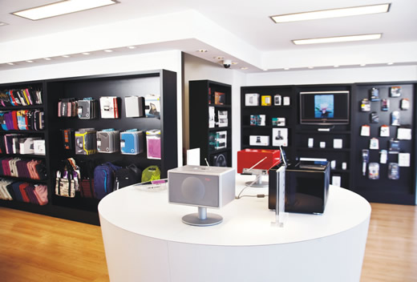
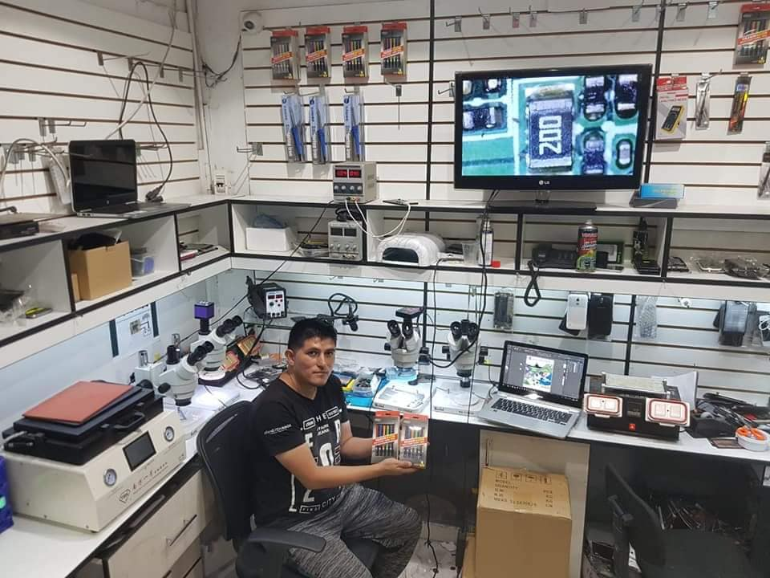

Estadística aplicada
Muestreo no probabilistas
Muestreo Casual y Muestreo Opinático
Realizado por Rafael Amaya
Estudio realizado usando el Muestreo Casual
Mira aquí abajo
En esta investigación se quiso conocer la opinión de una aplicación capaz de realizar pedidos de claves digitales para canjear en las siguientes plataformas
 Windows
Windows Steam
Steam Amazon-pay
Amazon-paySe llevo a cabo un recorrido hasta una tienda de tecnología relacionada a todo lo que la informática en si se refiere y en el pasillo entregamos una pequeña entrevista a las primeras 20 personas que nos tropezamos para la diferentes opiniones de la aplicación
Apoyados en esto, comenzamos a realizar entrevista abordando los siguientes puntos y opciones
| Encuesta | ||||
|---|---|---|---|---|
| Preguntas | Ineficiente | Regular | Bien | Excelente |
| Cómo califica los pasos de pedido en la aplicación? | ||||
| ¿Cómo califica la accesibilidad de la aplicación? | ||||
| ¿Cómo califica los elementos interactivos dentro de la aplicación? | ||||
| ¿Cuál es el grado de utilidad que considera para la aplicación? | ||||
| Recomendaría la aplicación? | ||||
Todos los puntos abordados son llenados según las opiniones de los usuarios tropezados por la vía
| Encuesta | ||||
|---|---|---|---|---|
| Preguntas | Ineficiente | Regular | Bien | Excelente |
| ¿Cómo califica los pasos de pedido en la aplicación? | X | X | X | X |
| ¿Cómo califica la accesibilidad de la aplicación? | X | X | X | X |
| ¿Cómo califica los elementos interactivos dentro de la aplicación? | X | X | X | X |
| ¿Cuál es el grado de utilidad que considera para la aplicación? | X | X | X | X |
| Recomendaría la aplicación? | X | X | X | X |
Gráfico de los resultados de la encuesta
Con esto finalizamos el muestreo casual
Ahora prosigue el muestreo opinático
Estudio realizado usando el Muestreo Opinático
Mira aquí abajo
Para esta oportunidad se hizo un estudio selectivo sobre servicios de seguridad informática servidas en medio informáticos en general para la protección y confidencialidad de datos tales como las siguientes
Para hacer el muestreo se hizo una visita a un servicio técnico dedicado al mantenimiento de equipos conformado por 30 empleados, de los cuales se escogieron 8 para la entrevista
En ella solo se debe de marcar con una X la opción como en este ejemplo
| Encuesta | ||||
|---|---|---|---|---|
| Preguntas | Opción 1 | Opción 2 | Opción 3 | |
| ¿Que sistema operativo utiliza? | Windows [ ] | Mac [ ] | Linux [ ] | |
| ¿Cuál es el grado de utilidad que considera para el análisis de archivos recién descargado de internet? | Mala [ ] | Bien [ ] | Excelente [X] | |
| ¿Cómo califica la seguridad por claves de cifrado en la aplicación? | Mala [ ] | Bien [ ] | Excelente [X] | |
| ¿Cómo califica las seguridad de encriptado para los archivos que se suben a internet? | Mala [X] | Bien [ ] | Excelente [ ] | |
| ¿Considera que las opciones de recuperación de datos son las más efectivas para la restauración en caso de fallas? | No [ ] | Tal vez [X] | Si [ ] | |
Gráfico de los resultados de la encuesta
Personas del muestreo que usan sistema operativos